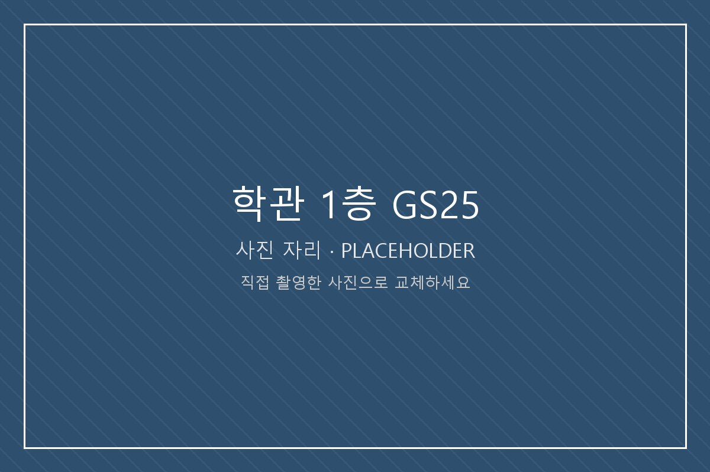

이 장소가 의미 있는 이유
여기서 뭘 사려고 결심하고 가는 일은 거의 없다. 학관에 들어가면 그냥 발이 먼저 꺾인다. 진열대를 한 바퀴 돌고 아무것도 안 사고 나온 날도 많다.
그런데도 이 편의점이 세 곳 중 첫 번째인 이유는, 여기가 내 아침과 점심을 실제로 책임지고 있기 때문이다. 1교시가 있는 날은 밥 먹을 시간이 없어서 삼각김밥으로 때우고, 점심시간이 애매하게 잘린 날도 여기서 해결한다. 계획해서 오는 곳이 아니라 하루가 계획대로 안 풀렸을 때 오는 곳이다.
학교 안에 있다는 것도 크다. 밖 편의점까지 나갔다 오면 왕복 시간이 붙지만, 여기는 수업 건물에서 내려오는 길에 있다. 그래서 이 편의점은 "선택한 장소"가 아니라 어느새 하루의 기본값이 된 장소에 가깝다.
찾아가는 방법
학생회관(학관) 건물로 들어가면 1층에 바로 있다. 같은 건물 2층이 학생식당이라, 편의점에서 계단만 한 층 올라가면 밥까지 해결된다.
여기에서 해볼 것
- 1교시 전 아침 대용으로 삼각김밥과 커피 조합 시험해 보기
- 계산대 앞에 줄이 가장 긴 시간대가 언제인지 세어 보기
- 아무것도 안 사고 한 바퀴만 돌고 나오는 날이 일주일에 며칠인지 세어 보기
- 같은 학과 사람을 여기서 몇 번 마주치는지 기록해 보기
가기 좋은 시간
1교시 시작 10분 전과 점심시간 직전에는 계산대에 줄이 길다. 여유 있게 고르고 싶다면 수업이 한창인 시간대에 들르는 편이 낫다.